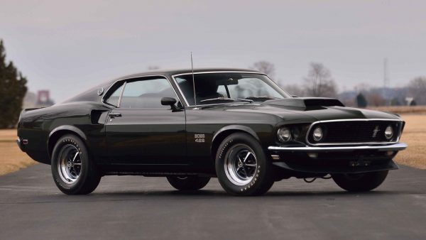

There really isn’t much to be said about this car restoration project. The Ford Mustang was introduced in 1964 and immediately upset the market by creating an entirely new ‘Pony Car’ segment. The idea behind a pony car was to create a small and light vehicle with moderate power that handled and performed exceptionally well. Passengers optional. This is easily one of the most recognizable cars on earth, and you really can’t go wrong restoring one. No matter what year or trim you choose (aside from the rarer Boss variants and Shelby offerings), you’re pretty much guaranteed a surplus of cheap and readily-available parts. It’s also a great car to do custom-fab work on if you’re more of a do-it-yourselfer like our buddy Beto, whose 1966 Resto-Mod Mustang we covered a while back. Of course, if the Mustang made this list, that surely must mean.
